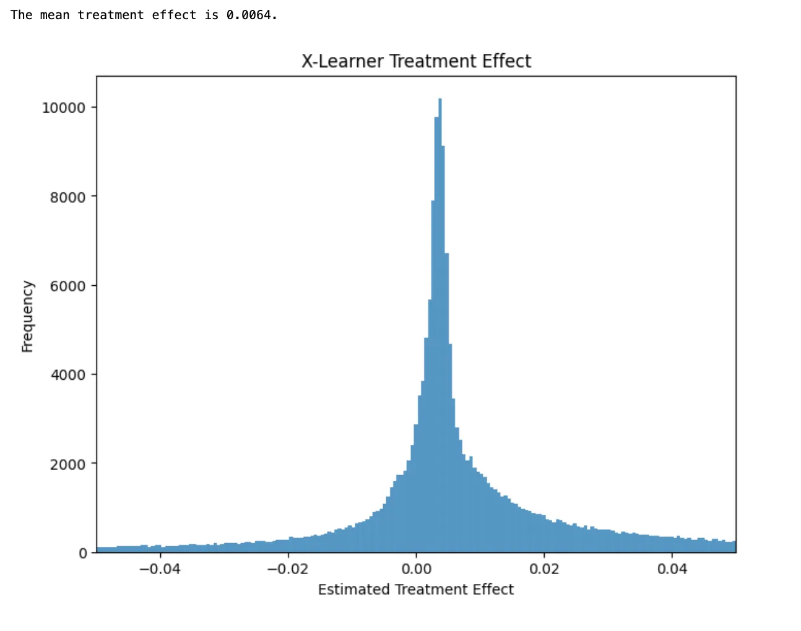

Meta-learners like S-Learner, T-Learner, and X-Learner are some of the most widely used approaches for Uplift modeling. When teaching about these approaches, I find that students often find the X-learner model somewhat confusing to understand. In this post, I describe a modified approach I call simplified X-learner (Xs-learner) that is easier to understand, faster to implement, and in my experience often works as well or better in practice.
Uplift Modeling
A/B testing is a common method used at tech companies to make informed decisions. For example, imagine you want to send out a coupon to users and you want to know how much it will increase the chances of them completing their first order with your service. By running an A/B test, you can determine on average how effective the coupon is. However, you may also want to know which users the coupon will help you generate higher profits and which users the coupon will cause you to lose money.
Uplift modeling is a technique that lets us go beyond learning the average effect of a treatment and instead helps us understand how the effect of the treatment varies across your users. This allows us to more efficiently decide which treatment to send to each user.
Meta-learners
Some of the most common approaches for solving uplift problems are known as meta-learners, because they are ways to take existing supervised learning algorithms and using their predictions in order to make estimates of the treatment effect for each user.
I’ll be demonstrating each of these approaches using a dataset from Lenta, a large Russian grocery store that sent out text messages to their users and saw whether it would increase their probability of making a purchase. In each of the examples I will be using the following notation:
- Y: Did the user make a purchase (the outcome variable)
- T: Did the user receive a text message(the treatment variable)
- X: All the other information we know about the user, e.g. age, gender, purchase history. (The Lenta dataset has almost 200 features describing each user)
import matplotlib.pyplot as plt
import numpy as np
import pandas as pd
import seaborn as sns
from sklearn.model_selection import train_test_split
from sklearn.preprocessing import OneHotEncoder
from xgboost import XGBClassifier, XGBRegressor
from sklift.datasets import fetch_lenta
from sklift.viz import plot_qini_curve
from numpy.random import default_rng
rng = default_rng()We’ll use the sklift package, which has a useful function that helps download the data for the Lenta uplift experiment and do some basic processing of the data.
data = fetch_lenta()
Y = data['target_name']
X = data['feature_names']
df = pd.concat([data['target'], data['treatment'], data['data']], axis=1)
gender_map = {'Ж': 0, 'М': 1}
group_map = {'test': 1, 'control': 0}
df['gender'] = df['gender'].map(gender_map)
df['treatment'] = df['group'].map(group_map)
T = 'treatment'
# Split our data into a training and an evaluation sample
df_train, df_test = train_test_split(df, test_size=0.3, random_state=42)S-Learner
S-learner is the simplest and easiest to understand of these approaches. With S-learner you fit a single machine learning model using all of your data, with the treatment variable (did you get a text message) as one of the features. You can then use this model to predict “what would happen if the user got the text” and “what would happen if the user did not get the text”. The difference between these two predictions is your estimate of the treatment effect of the text message on the user.
In all my examples, I use XGBoost as a simple and effective baseline ML model that is fast to train and generally works well on many problems. In any real world problem you should be testing more than one type of model and should be doing cross validation to find hyperparameters that work well for your particular problem.
slearner = XGBClassifier()
slearner.fit(df_train[X+[T]], df_train[Y])
# Calculate the difference in predictions when T=1 vs T=0
# This is our estimate of the effect of the coupon for each user in our data
slearner_te = slearner.predict_proba(df_test[X].assign(**{T: 1}))[:, 1] \
- slearner.predict_proba(df_test[X].assign(**{T: 0}))[:, 1]One downside of the S-learner model is that there is nothing that tells the model to give special attention to the treatment variable. This means that often your machine learning model will focus on other variables that are stronger predictors of the outcome and end up ignoring the effect of the treatment. This means that on average your estimates of the treatment will be biased towards 0.

T-learner
T-learner uses two separate models. The first model looks only at the users who did not receive the coupon. The second model looks only at the users who did receive the coupon. To predict the treatment effect, we take the difference between the predictions of these two models. T-learner essentially forces your models to pay attention to the treatment variable since you make sure that each of the models only focuses on either the treated or untreated observations in your data.
tlearner_0 = XGBClassifier()
tlearner_1 = XGBClassifier()
# Split data into treated and untreated
df_train_0 = df_train[df_train[T] == 0]
df_train_1 = df_train[df_train[T] == 1]
# Fit the models on each sample
tlearner_0.fit(df_train_0[X], df_train_0[Y])
tlearner_1.fit(df_train_1[X], df_train_1[Y])
# Calculate the difference in predictions
tlearner_te = tlearner_1.predict_proba[df_test[X]](:, 1) \
- tlearner_0.predict_proba[df_test[X]](:, 1)
Simplified X-learner (Xs-learner)
The simplified X-learner use 3 models to form its predictions. The first two are exactly the same models we used for T-learner: one model trained only using the treated observations, and the other model trained using only the untreated observations.
With T-learner we formed our treatment effect estimates by taking the difference between the predictions of these two models (predicted outcome when treated minus predicted outcome when untreated). The Xs-learner takes the actual outcome of the user under the treatment their received and compares that to the predicted outcome if they received the other treatment (actual outcome minus predicted outcome).
# We could also just reuse the models we made for the T-learner
xlearner_0 = XGBClassifier()
xlearner_1 = XGBClassifier()
# Split data into treated and untreated
df_train_0 = df_train[df_train[T] == 0]
df_train_1 = df_train[df_train[T] == 1]
# Fit the models on each sample
xlearner_0.fit(df_train_0[X], df_train_0[Y])
xlearner_1.fit(df_train_1[X], df_train_1[Y])
# Calculate the difference between actual outcomes and predictions
xlearner_te_0 = xlearner_1.predict_proba[df_train_0[X]](:, 1) - df_train_0[Y]
xlearner_te_1 = df_train_1[Y] - xlearner_0.predict_proba[df_train_1[X]](:, 1)We can’t use these differences directly, because we would not be able to make predictions for any new users since we wouldn’t know the actual outcomes for these new users. So we need to train one more model. This model predicts the treatment effect as a function of the X variables.
# Even though the outcome is binary, the treatment effects are continuous
xlearner_combined = XGBRegressor()
# Fit the combined model
xlearner_combined.fit(
# Stack the X variables for the treated and untreated users
pd.concat[[df_train_0, df_train_1]](X),
# Stack the X-learner treatment effects for treated and untreated users
pd.concat([xlearner_te_0, xlearner_te_1])
)
# Predict treatment effects for each user
xlearner_simple_te = xlearner_combined.predict(df_test[X])
Full X-learner
The simplified X-Learner required 3 ML models. The full X-learner as originally proposed by Künzel et al. requires 5 ML models.
Instead of fitting one combined model that predicts the treatment effects for everyone, the full X-learner uses two separate models, one for the treated users and one for the untreated users. This gives us two difference models that can predict treatment effects for new users. Künzel et al. recommend taking a weighted average of the two models, with the weights determined by a final propensity score model that predicts the probability of receiving the treatment.
# Define the new models that are not used in the simple version
xlearner_te_model_0 = XGBRegressor()
xlearner_te_model_1 = XGBRegressor()
xlearner_propensity = XGBClassifier()
xlearner_te_model_0.fit(df_train_0[X], xlearner_te_0)
xlearner_te_model_1.fit(df_train_1[X], xlearner_te_1)
# Calculate predictions from both models
xlearner_te_model_0_te = xlearner_te_model_0.predict(df_test[X])
xlearner_te_model_1_te = xlearner_te_model_1.predict(df_test[X])
# Calculate the propensity scores
xlearner_propensity.fit(df_train[X], df_train[T])
xlearner_propensities = xlearner_propensity.predict_proba[df_test[X]](:, 1)
# Calculate the treatment effects as propensity weighted average
xlearner_te = xlearner_propensities *xlearner_te_model_0_te + (1 - xlearner_propensities)* xlearner_te_model_1_te
Comparing the Results
We can compare the performance of each of these models using our held-out test set data. Here I am using Qini plots, which are a common approach for comparing the performance of Uplift models. Similar to an ROC curve, the higher the model’s line goes above the diagonal, the better the performance.
fig, ax = plt.subplots(figsize=(20, 10))
def plot_qini_short(model, label, color, linestyle):
plot_qini_curve(df_test[Y], model, df_test[T], name=label, ax=ax, perfect=False, color=color, linestyle=linestyle)
plot_qini_short(slearner_te, 'Slearner', 'blue', 'solid')
plot_qini_short(tlearner_te, 'Tlearner', 'red', 'solid')
plot_qini_short(xlearner_simple_te, 'Xlearner Simple', 'purple', 'solid')
plot_qini_short(xlearner_te, 'Xlearner', 'green', 'solid')
ax.legend(loc='lower right');
For this particular dataset, the simplified X-Learner had the best overall performance.
We shouldn’t draw any strong conclusions about the relative performance of difference algorithms from this single example. In my experience, which algorithm works best varies a lot depending on the specific problem you are working on. However, I do think that this example demonstrates that the simplified X-Learner (Xs-learner) is one more approach worth considering when working on Uplift problems.
References
- Athey, Susan, and Guido W. Imbens. Machine learning for estimating heterogeneous causal effects. №3350. 2015. https://www.gsb.stanford.edu/faculty-research/working-papers/machine-learning-estimating-heretogeneous-casual-effects
- Künzel, Sören R., et al. “Metalearners for estimating heterogeneous treatment effects using machine learning.” Proceedings of the national academy of sciences 116.10 (2019): 4156–4165. http://sekhon.berkeley.edu/papers/x-learner.pdf
- Gutierrez, Pierre, and Jean-Yves Gérardy. “Causal inference and uplift modelling: A review of the literature.” International conference on predictive applications and APIs. PMLR, 2017. http://proceedings.mlr.press/v67/gutierrez17a/gutierrez17a.pdf